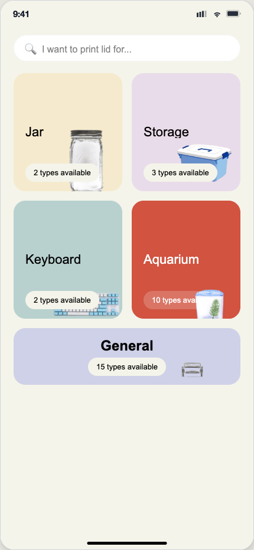

Vibe Coding Project — 05 / Mobile
LidGenius
A 3D-printable lid customizer with a live wireframe visualization, from splash screen straight to the print queue.

ViewLive Site
The Problem
Printing feels like a black box
Most consumer 3D-printing tools show a progress bar and nothing else — you tap print and wait, with no sense of what's actually happening inside the machine. For something as small and personal as a replacement lid, that gap between action and object makes people distrust the result before it's even printed. Off-the-shelf lids rarely match odd cup shapes or discontinued products in the first place, so the moment someone finally lands on a fitting design, the last thing it should feel like is a black box.
The Approach
Make the wait feel like proof
Instead of hiding the process behind a spinner, LidGenius exposes it. A live wireframe traces the lid's geometry the moment the screen loads, and ion particles travel along each wire as a visual stand-in for the print head actually tracing that path. The bet: if you can watch the shape resolve in real time, the object that comes out the other end feels earned rather than conjured — the animation is doing trust-building work, not just decoration.
Features
What it does
How it works
Open the app and the wireframe renders instantly around the LidGenius mark, with ion particles drifting along each wire. Tap Start printing to queue the design — the same animated canvas that drew you in becomes the live status view for your print.
What's Next
Turning the wireframe into real feedback
Right now the wire pattern is decorative — a fixed animation rather than a rendering of the actual uploaded lid. The next version would tie the wireframe directly to a scanned or uploaded cup profile, so what you watch trace on screen is literally the shape being sent to the printer, and the "proof" the animation offers becomes true, not just implied.